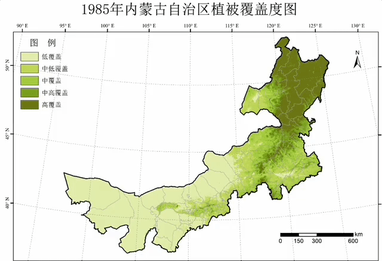
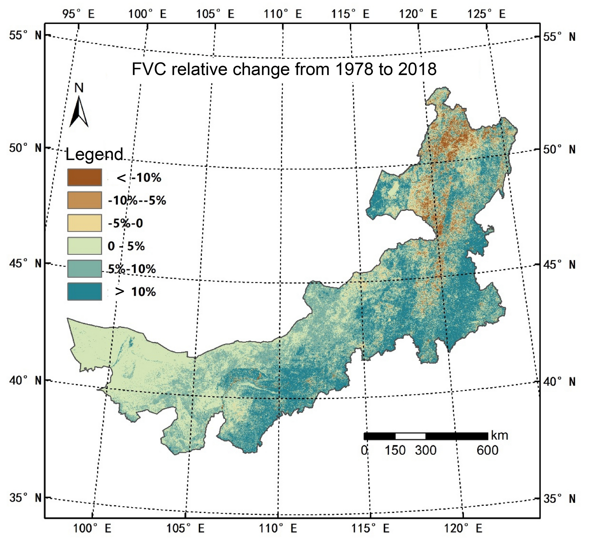

Based on high temporal resolution remote sensing data such as NOAA AVHRR and MODIS, this project obtained five vegetation coverage data products of the Inner Mongolia Autonomous Region from 1978 to 2018 through data fusion and scale conversion based on GEE. The spatial-temporal variation of fractional vegetation cover over the past 40 years was analyzed. This project aimed to support the scientific evaluation of the ecological environment status, vegetation growth potential, and carbon sequestration capacity in Inner Mongolia, China. It provides a reference for the macro layout and implementation of major ecological construction projects in Inner Mongolia, China.

High resolution (30m) average Fractional Vegetation Cover (FVC), from 1978 to 2018.

Fractional Vegetation Cover (FVC) dynamic from 1978 to 2018.
 Monthly FVC in the year of 2018
Monthly FVC in the year of 2018

The Inner Mongolia is greening in the past 4 decades.